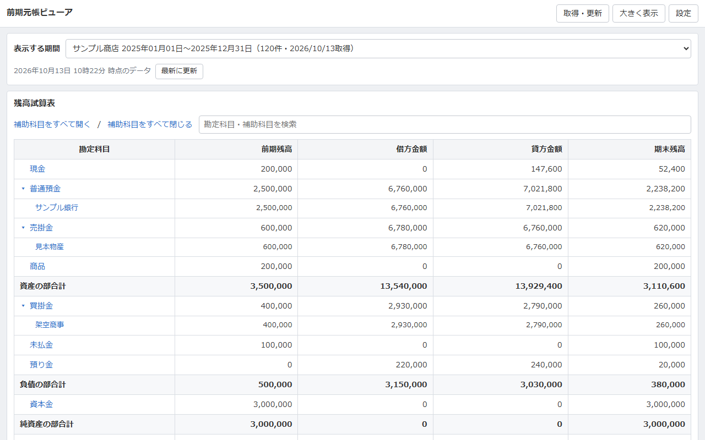

前期元帳ビューア 導入・利用手順書
Chrome拡張機能「前期元帳ビューア」を入れると、マネーフォワード クラウド会計で当期を開いて入力したまま、ブラウザの右側に前期の残高試算表・総勘定元帳・補助元帳を表示できます。導入は15分ほどで、最初の1回だけ作業が必要です。

- はじめに
- 用意するもの
- 手順1：拡張機能をChromeに追加する
- 手順2：リダイレクトURIをコピーする
- 手順3：マネーフォワード クラウドでアプリを登録する
- 手順4：拡張機能に設定して接続する
- 手順5：前期の仕訳を取得する
- 使い方
- 表示される金額についての注意
- 複数の事業者を使う場合
- CSVで読み込む（仕訳帳・総勘定元帳）
- 困ったとき
- データの扱いと削除
- zipで配布された版から乗り換える場合
- お問い合わせ
はじめに
できること
- 前期や前々期など、過去の会計期間の残高試算表を表示する（前期残高・借方金額・貸方金額・期末残高）
- 科目名を押して総勘定元帳、補助科目名を押して補助元帳を開く
- 月やキーワード（摘要・相手科目・金額・取引先）で明細を絞り込む
- 明細を押して、その仕訳の全行（複合仕訳を含む）を確認する
- 税区分・税額・インボイス区分（適格・非適格）・部門・取引先・メモ・タグも、元帳と仕訳の詳細に表示する
- 経理方式が税抜（内税）の場合は、消費税を仮払消費税・仮受消費税に振り分けた税抜の金額で表示する
- APIのほか、クラウド会計から書き出した仕訳帳・総勘定元帳のCSVも読み込める
しくみ
クラウド会計の画面では、選択中の会計期間がログイン状態にひも付いています。そのため、別のタブで前期に切り替えると当期のタブまで前期になります。この拡張機能は会計の画面を使わず、マネーフォワードが公式に提供しているAPI（外部連携の窓口）から前期の仕訳を受け取り、拡張機能の中で元帳を組み立てて表示します。そのため、当期の画面には影響しません。
安全性
- 読み取り専用です。会計データを追加・変更・削除する機能はありません。
- 受け取った仕訳と接続情報は、お使いのパソコンのChromeの中だけに保存されます。
- 通信先はマネーフォワードのサーバーだけです。開発者や第三者にデータが送られることはありません。
用意するもの
| もの | 内容 |
|---|---|
| パソコン版のGoogle Chrome | WindowsまたはMac。スマートフォン版のChromeでは拡張機能を使えません。 |
| マネーフォワード クラウドのアカウント | いつもクラウド会計にログインしているもので構いません。 |
| 「アプリ開発」の権限 | 手順3のアプリ登録に必要です。 |
| 「アプリ連携」の権限 | 手順4の接続に必要です。見たい事業者ごとに必要です。 |
手順1：拡張機能をChromeに追加する
- Chromeウェブストアで「前期元帳ビューア」のページを開き、「Chromeに追加」を押します。
- 確認の表示が出たら「拡張機能を追加」を押します。
- 設定画面が自動で開きます。「ご利用の前に（データの取り扱い）」を読み、「同意して使い始める」を押します。
- Chrome右上のパズルの形のアイコンを押し、「前期元帳ビューア」の横のピンを押します。ツールバーにアイコンが常に表示されるようになります。
手順2：リダイレクトURIをコピーする
- 設定画面の「はじめに：マネーフォワード クラウドでアプリを登録する」にある、
https://…….chromiumapp.org/mfの形の文字列（リダイレクトURI）の横の「コピー」を押します。
設定画面を閉じてしまった場合は、ツールバーの「前期元帳ビューア」のアイコンを押してパネルを開き、右上の「設定」を押すと、もう一度開けます。設定画面は手順4でも使うので、開いたままにしておきます。
手順3：マネーフォワード クラウドでアプリを登録する
拡張機能がクラウド会計のデータを受け取るための「入館証」を、ご自身で発行する作業です。1人1回だけ行います。
- Chromeで https://app-portal.moneyforward.com/（アプリポータル）を開き、いつものマネーフォワード クラウドのアカウントでログインします。
- 右上の事業者名が、見たい事業者になっていることを確認します。
- 左のメニューの「アプリ開発」を押し、新しいアプリを登録するボタンを押します。
- 次の3つを入力して登録します。
項目 入力する値 アプリ名称 前期元帳ビューア（自由に決めて構いません） リダイレクトURI 手順2でコピーした文字列を貼り付けます クライアント認証方式 CLIENT_SECRET_BASIC - 登録後に表示される「Client ID」と「Client Secret」を控えます。
参考：STEP 1. アプリを登録する（マネーフォワード公式）
手順4：拡張機能に設定して接続する
- 拡張機能の設定画面に戻ります。
- 手順3で控えた「Client ID」を「クライアントID」に、「Client Secret」を「クライアントシークレット」に貼り付けます。
- 「クライアント認証方式」が CLIENT_SECRET_BASIC になっていることを確認し、「保存」を押します。「詳細設定」は変更しません。
- ツールバーの「前期元帳ビューア」のアイコンを押します。画面の右側にパネルが開きます。
- パネル右上の「取得・更新」を押し、「マネーフォワード クラウドに接続」を押します。
- マネーフォワードのログイン画面が別ウィンドウで開きます。見たい事業者を選んで、連携を許可します。
- パネルに「接続済み」と事業者名が表示されれば完了です。
一度接続すれば、しばらくはそのまま使えます。「未接続」に戻った場合は、もう一度「マネーフォワード クラウドに接続」を押してください。
手順5：前期の仕訳を取得する
- 接続後、「会計期間」にその事業者の期間が一覧で表示されます。初めは「前期」が自動で選ばれています。
- 別の期間を見たい場合は、一覧から選びます。
- 「この期間の仕訳を取得」を押します。
- 仕訳100件ごとに約1秒かかります（1,000件なら約10秒）。途中で「回数制限のため待ってから続けます」と出ても、自動で再開されるので待ちます。取得が終わるまで、パネルは閉じないでください。
- 取得が終わると、残高試算表が表示されます。
残高を正しく計算するため、仕訳は会計期間の最初の日（期首）から取得します。
使い方
| やりたいこと | 操作 |
|---|---|
| パネルを開く | ツールバーの拡張機能のアイコンを押す。クラウド会計の当期の画面はそのまま入力できる |
| 補助科目を表示する | 科目名の左の▸を押す。まとめて開くときは「補助科目をすべて開く」 |
| 総勘定元帳を見る | 残高試算表で科目名（青い文字）を押す |
| 補助元帳を見る | 補助科目名を押す。元帳の画面で「補助科目」を切り替えてもよい |
| 月で絞る | 元帳の「月」を選ぶ |
| 明細を探す | 検索欄に摘要・相手科目・金額・取引先・税区分・インボイス区分などを入れる。空白で区切ると、すべてを含む明細だけになる（例：「家賃 3月」） |
| 仕訳全体を見る | 明細の行を押す。複合仕訳のすべての行と、税区分・税額・インボイス区分・部門・取引先・メモ・タグ・入力元などが表示される |
| 税抜・税込を切り替える | 「表示する期間」の下の「税抜で表示」のチェックを入れる・外す（経理方式が税抜（内税）のデータで出ます） |
| 税区分などを隠す | 元帳の「税区分・インボイスなどを表示」のチェックを外す。外すと、摘要・補助科目・取引先だけの表示になる |
| 広い画面で見る | 「大きく表示」で別タブに開く。またはパネルの左端をドラッグして広げる |
| 残高試算表に戻る | 元帳の左上の「残高試算表」を押す |
| 最新の内容に取り直す | 「表示する期間」の下の「最新に更新」を押す |
パネルの幅が狭いときは、相手科目と摘要が1つの列にまとめて表示されます。拡張機能の更新は、Chromeが自動で行います。
表示される金額についての注意
- 表示は、取得した時点の写しです。取得したデータはChromeに保存され、次回からは通信せずにすぐ開けます。そのかわり、取得したあとにクラウド会計で追加・修正した仕訳は反映されません。「表示する期間」の下に、いつ時点のデータかが表示されます。決算の作業中など、前期の仕訳を直したあとは「最新に更新」を押してください。
- 経理方式が「税抜（内税）」の事業者では、税抜の金額で表示します。「表示する期間」の下に「税抜で表示」のチェックが出ます（はじめから入っています）。チェックが入っていると、仕訳の金額から消費税額を引き、その税額を仮払消費税・仮受消費税に振り分けて表示します。適格請求書のない仕入（80%控除など）は、控除できる分だけを仮払消費税に入れます。チェックを外すと、仕訳に登録された税込の金額になります。行を押して開く仕訳の詳細は、登録されたとおりの金額（税込）です。総勘定元帳のCSVから読み込んだ場合は、はじめからクラウド会計の元帳と同じ金額です。
- 以前の版で取得したデータには、税区分の名称やインボイス区分が入っていません。「最新に更新」を押すと表示されます。
- クラウド会計の残高試算表の初期設定と同じく、「未実現仕訳」は含まれません。
複数の事業者を使う場合
接続できるのは、一度に1つの事業者だけです。取得したデータは事業者ごとに分けて保存されるので、一度取ればいつでも切り替えて見られます。
- 「取得・更新」→「接続解除」を押します。
- 「マネーフォワード クラウドに接続」を押し、マネーフォワードの画面で別の事業者を選んで許可します。
- 「この期間の仕訳を取得」を押します。
- 以後は、パネル上部の「表示する期間」で事業者名と期間を選んで切り替えます。
「権限がありません」という内容のエラーが表示された場合は、その事業者で自分に「アプリ連携」の権限が付いていません。アプリポータルでその事業者に切り替え、権限を付けます。自分で変更できない場合は、その事業者の管理者に依頼してください。
CSVで読み込む（仕訳帳・総勘定元帳）
アプリの登録ができない場合や、APIを使わずに見たい場合は、クラウド会計から書き出したCSVを読み込めます。
- クラウド会計で、見たい会計期間の「仕訳帳」または「総勘定元帳」を開き、右上の「エクスポート」からCSVで出力します。
- 拡張機能のパネルで「取得・更新」→「CSVを選択」を押し、出力したファイルを選びます。ファイルは、エクスポートしたまま（並べ替えや行の削除をしない状態）で選んでください。
仕訳帳と総勘定元帳のどちらのCSVかは、自動で見分けます。APIで取得した場合と比べて、次の違いがあります。
| 項目 | 仕訳帳のCSV | 総勘定元帳のCSV |
|---|---|---|
| 金額 | 仕訳に登録された金額（税抜（内税）の事業者では税込） | クラウド会計の元帳と同じ金額 |
| 科目の並び順と、残高の向き（プラス・マイナス） | 科目名からの推定 | CSVのとおり |
| 前期残高 | 開始仕訳が含まれていれば表示 | 各科目の最初の行の残高から計算して表示 |
| 補助科目の前期残高・期末残高 | 表示 | 前期残高のある科目では「—」（CSVに含まれないため）。補助元帳の残高は、期中の増減の累計 |
| 期中に取引のない科目 | 開始仕訳にあれば表示 | 表示されない（CSVに含まれないため） |
| 区分ごとの合計（資産の部合計など） | なし | なし |
| 「最新に更新」 | 使えません。取り直すときは、CSVを出力し直して読み込みます | |
動作を試すための架空のデータ（仕訳帳の形式）を用意しています：sample-journal.csv（サンプル）
困ったとき
| 症状・表示される内容 | 原因 | 対処 |
|---|---|---|
| ボタンが押せない。入力欄に入力できない | 「ご利用の前に（データの取り扱い）」にまだ同意していない | 画面の上のほうにある「同意して使い始める」を押す |
| 「はじめに設定が必要です」と表示される。「設定画面でクライアントIDとクライアントシークレットを入力してください」と表示される | 手順4の1〜3がまだ | 「設定を開く」を押して、手順2〜4を行う |
| マネーフォワードのログイン画面に「redirect_uri」を含むエラーが出る | アプリ登録のリダイレクトURIが違う | アプリポータルで、設定画面に表示されている値と完全に同じか確認する |
| 「クライアントの認証に失敗しました」 | Client ID・Client Secret・認証方式のどれかが違う | 設定画面で貼り直す。認証方式をアプリ登録時と同じにする |
| 「権限がありません」という内容のエラー | 選んだ事業者で「アプリ連携」の権限がない | 「複数の事業者を使う場合」の最後の段落を参照 |
| 「ログイン画面が、すでに別のウィンドウで開いています」 | 前回のログイン画面が開いたまま | そのウィンドウで許可するか、閉じてから押し直す |
| 混み合っている、時間をおいてほしい、という内容のエラー | マネーフォワード側の回数制限や一時的な不調 | 数分待ってからもう一度取得する |
| 「認証が無効になりました」「もう一度接続してください」 | 接続の期限切れ、またはマネーフォワード側で連携を解除した | 「マネーフォワード クラウドに接続」を押し直す |
| 残高がクラウド会計の画面と合わない | 取得後にクラウド会計で仕訳を修正した。または、税抜・税込の表示がクラウド会計の画面と違っている | 「最新に更新」を押す。経理方式が税抜（内税）の場合は、「税抜で表示」のチェックを確かめる。表示される金額についての注意を確認する |
解決しないときは、画面に出た文言をそのままお問い合わせ先にお知らせください。
データの扱いと削除
- 取得した会計データは、「取得・更新」→「表示中の期間データを削除」で削除できます。
- 接続情報（トークン）は、「取得・更新」→「接続解除」で削除できます。
- クライアントIDとクライアントシークレットは、設定画面の「クライアントIDとシークレットを削除（接続も解除）」で削除できます。
- 拡張機能をChromeから削除すると、保存したすべての情報が削除されます。
- マネーフォワード側の連携は、アプリポータルの「連携中アプリ」から解除できます。
くわしくはプライバシーポリシーをご覧ください。
zipで配布された版から乗り換える場合
以前にzipファイルで配布された版（デベロッパーモードで読み込む版）を使っていた場合は、次の点にご注意ください。
- ストア版は別の拡張機能として扱われるため、設定と取得済みのデータは引き継がれません。
- リダイレクトURIが変わります。アプリポータルで、登録済みのアプリのリダイレクトURIを、ストア版の設定画面に表示されている値に変更してください。
- ストア版で手順4・手順5を行ったあと、
chrome://extensionsから古い版を削除します。
お問い合わせ
不具合の報告やご質問は、GitHubのIssuesページにお寄せください。Issuesは誰でも読める場所です。会計データやClient Secretなどの秘密の情報は、書き込まないでください。